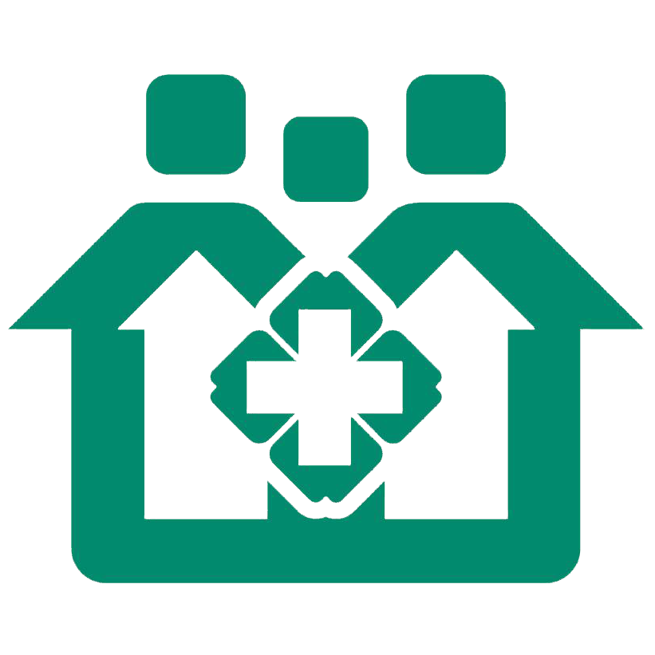

苏州市社区居民家庭医生服务合约
编号：100001
甲方（社区居民）：付华
甲方联系电话：18550253902
家庭住址：三园一村12幢201
乙方（家庭医生）：刘芳芳
乙方联系电话：18321219890
丙方：苏州市金阊区社区卫生服务中心
为满足居民不断增长的医疗卫生需求，根据国家和省有关政策文件规定，乙方将向甲方提供健康管理和寻医问药为主要内容的基本医疗卫生服务。甲、乙、丙三方本着自愿平等的原则，经友好协商达成如下协议
一、乙方为甲方提供以下签约服务
免费服务包
1.建立健康档案服务。建立居民健康档案，根据居民个人健康信息，每年对其进行一次健康状况评估，制定个性化的健康计划，使居民及时了解自身的健康状况。并及时更新，保证健康档案资料的完整性和准确性，为档案隐私尽保护责任。
2.健康教育和健康咨询服务。每个季度至少发放一份健教材料；每月组织一次健康教育讲座，普及健康知识，开展健康咨询。
3.7岁以下儿童健康管理服务。为适龄儿童提供一类疫苗接种和为新生儿提供家庭访视，为7岁以下儿童提供健康管理、咨询健康指导服务。
4.孕产妇保健管理服务。对孕妇提供不少于5次孕期健康管理服务，为产妇提供产后访视和42天健康检查；为育龄妇女提供优生优育、避孕节育等健康知识咨询和指导。
5.老年人健康管理服务。每年对65岁以上老年人提供健康咨询和指导服务不少于4次
6.慢性病患者管理服务。为明确诊断的高血压、2型糖尿病等慢性病患者进行治疗、行为干预、监测和健康评估，提供定期随访、用药指导、健康教育及咨询等服务每季度不少于1次
7.精神疾病患者管理服务。对居家知情同意的重性精神疾病患者提供随访、康复指导服务，对患者家属进行培训，每季度不少于1次；每年提供1次健康体检
8.传染病管理。对居家医学观察的传染病密切接触者提供预防指导
9.咨询服务。对在健康管理中发现问题的，及时给予医学指导或转诊建议
10.转诊和预约服务。优先提供三级医院转诊和预约服务。
二、服务收费和结算：
免费服务包由政府向乙方单位购买免费提供给甲方，增值服务包，由乙方根据物价部门定价或双方协商后报价物价部门备案确定。出诊、药品、检查等费用由乙方单位收取，出具收据。
三、三方权利与义务
（一）甲方......
甲方家庭成员自愿接受以上签约服务，并以健康状况及时、如实告知乙方，尊重乙方服务过程，配合卫生行政部门和社区卫生服务机构等对乙方服务工作的考核 评估。按照双方约定，按时足额支付费用。
（二）乙方......
乙方应保护甲方的个人隐私，履行服务内容告知义务，主动提醒甲方接受服务，及时整理服务信息，保持服务的连续性、综合性、主动性。
（三）丙方......
丙方需加强对乙方的管理，并为乙方在对甲方服务过程中提供相关支持和后勤保障。督促乙方按协议做好相关工作。遇到甲乙两方的纠纷，丙方负责协商解决，或通过其他途径解决。
四、协议有效期
本协议有效期为一年，从2016年7月1日至2017年7月1日.....
五、家庭成员
姓名：付华
性别：男
手机号：18550221212
身份证号：341124199320102999
加入家庭时间：2017-06-12
六、附则
（一）任何一方为履行本协议项下的义务均视为违约。遇不可抗力造成协议不能履行的，乙方不负责任。
（二）本协议一式三份。甲乙丙三方各执一份。甲乙双方签字后生效。
（三）未尽事宜甲乙双方协商处理。如发生争议，由丙方协调甲乙双方协商解决。协商不成，甲方可向当地卫生行政部门反映。
甲方签名：